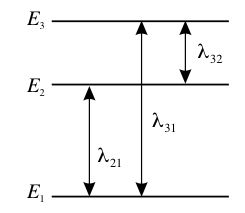
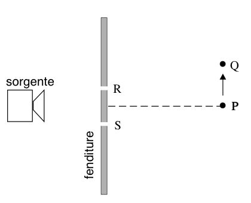
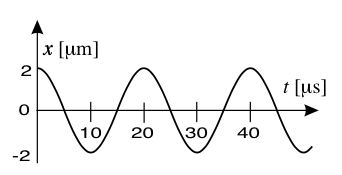
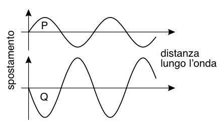
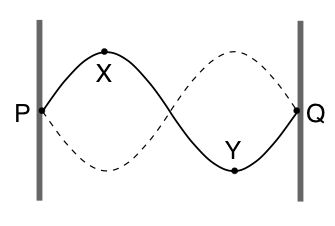
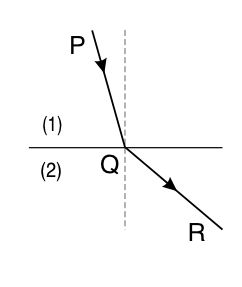
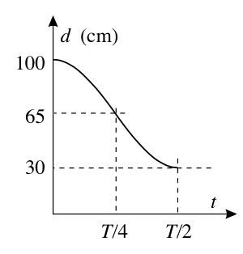
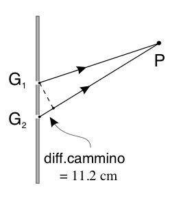
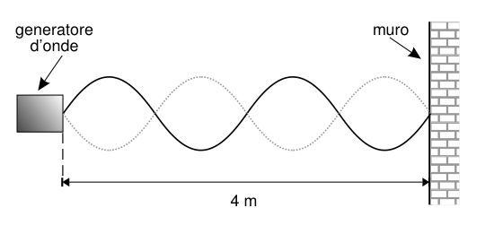
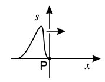

Test da Olimpiadi della Fisica
Esercizi su onde e suoni
JQuiz realizzato con HotPotatoes
-
Due fasci di uguale lunghezza d'onda e coerenti producono su uno schermo delle frange d'interferenza.
I due fasci hanno diversa intensità luminosa: l'intensità del primo fascio è pari a 4 volte quella dell'altro.
Qual è il rapporto tra il massimo e il minimo d'intensità sullo schermo?- 16:1
- 2:1
- 5:3
- 9:1
- 4:1
-
Quando la luce passa da un mezzo a un altro, con indice di rifrazione diverso, si ha una variazione . . .
- . . . della frequenza e della velocità.
- . . . della frequenza e della lunghezza d'onda.
- . . . della lunghezza d'onda e della velocità.
- . . . della frequenza, della lunghezza d'onda e della velocità.
- . . . solo della velocità.
-
Il diagramma mostrato in figura rappresenta la struttura dei livelli energetici per gli elettroni degli orbitali esterni di un certo atomo e λ1, λ2 e λ3 rappresentano le lunghezze d'onda delle radiazioni emesse quando gli elettroni "
saltano " tra i livelli di energiaE 1,E 2 edE 3, come indicato dalle frecce.
Quale o quali delle seguenti affermazioni sono corrette?
1 - λ31 = λ21 + λ32.
2 - La frequenza della radiazione di lunghezza d'onda λ32 è minore di quella della radiazione di lunghezza d'onda λ31.
3 - Se λ31 è una lunghezza d'onda nella regione dell'ultravioletto, allora λ21 potrebbe essere una lunghezza d'onda nello spettro visibile.- Tutte e tre.
- Sia la 1 che la 2.
- Sia la 2 che la 3.
- Soltanto la 1.
- Soltanto la 3.
-
L'occhio umano riesce appena a vedere una luce arancione (λ = 600 nm) se sulla retina incide una potenza di 1.7 x 10-18 W.
In tale situazione, il numero di fotoni che in un secondo colpiscono l'occhio è approssimativamente . . .- 5
- 50
- 500
- 5 x 104
- 5 x 109
-
Un LED (
Light Emitting Diode ), ovvero un diodo che emette luce, produce una radiazione luminosa di lunghezza d'onda λ.
L'energia di un fotone emesso da questo diodo è data da-
h λ -
h / λ -
h λ /c -
h c / λ -
h c λ
-
-
In una camera oscura, a una distanza di 0.50 m da una sorgente puntiforme di luce, la potenza luminosa per unità di superficie vale 160 unità.
Alla distanza di 2.0 m dalla sorgente, la stessa grandezza ha il valore di- 160 unità
- 80 unità
- 40 unità
- 10 unità
- 5 unità
-
Una sorgente di microonde di lunghezza d'onda λ è posta di fronte a due fenditure, indicate con R e S in figura. Un rivelatore di microonde registra un massimo di intensità quando si trova nel punto P, per il quale RP = SP.
Il rilevatore viene quindi spostato e il primo punto in cui si registra un nuovo massimo è Q.
La differenza di cammino (SQ-RQ) vale allora- 0
- λ / 2
- λ
-
k λ / 2, conk dispari. -
k λ, conk intero.
-
Una particella investita da un'onda progressiva si muove di moto armonico semplice, in fase con l'onda; il grafico mostra come varia la posizione della particella in funzione del tempo.
L'onda avanza alla velocità di 5.0 km s-1.
La sua lunghezza d'onda è:- 0.010 m
- 0.020 m
- 0.050 m
- 0.10 m
- 0.20 m
-
La figura mostra, ad uno stesso istante, i profili di due onde, P e Q, di uguale frequenza e di ampiezza rispettivamente
Y e 2Y .
Le onde sono sovrapposte e producono un'onda risultante.
Quali sono l'ampiezza dell'onda risultante e la differenza di fase (in radianti) tra l'onda risultante e l'onda P?-
ampiezza:
Y , fase = 0 -
ampiezza:
Y , fase = π -
ampiezza: 2
Y , fase = 0 -
ampiezza: 3
Y , fase = π -
ampiezza: 3
Y , fase = 0
-
ampiezza:
-
Il diagramma mostra una corda elastica tesa fra due punti fissi P e Q. Sulla corda è presente un'onda stazionaria.

Quale o quali delle seguenti affermazioni, riguardo ai due punti indicati X e Y della corda, sono corrette?
1 - I due punti oscillano con una differenza di fase uguale a π.
2 - I due punti hanno lo stesso periodo di oscillazione.
3 - La distanza tra i due punti è uguale a una lunghezza d'onda.- Tutte e tre.
- Solo la 1 e la 2.
- Solo la 2 e la 3.
- Solo la 1.
- Solo la 3.
-
In figura la linea PQR rappresenta un sottile fascio di luce monocromatica che passa dal mezzo (1) al mezzo (2).

In tale fenomeno si può dire che . . .- . . . la frequenza della luce aumenta.
- . . . la frequenza della luce diminuisce.
- . . . la lunghezza d'onda della luce rimane invariata.
- . . . la lunghezza d'onda della luce aumenta.
- . . . la lunghezza d'onda della luce diminuisce.
-
In un ondoscopio si formano sull'acqua onde piane che si propagano a velocità costante. Nei disegni seguenti, in cui le linee rappresentano i ventri del sistema di onde a un certo istante, si mostrano delle onde (in vista dall'alto) che si propagano dalla parte alta del disegno a quella bassa. A un certo punto incontrano una barriera al cui centro vi è un'ampia interruzione.
Quale, fra i seguenti schemi, rappresenta correttamente la situazione al di là della barriera? -
Una molla, la cui lunghezza a riposo è
l 0, viene appesa al soffitto; all'altra estremità viene fissato un corpo che, dopo essere stato tirato e poi abbandonato, comincia ad oscillare secondo un moto armonico di periodoT . Il grafico indica come varia nel tempo la sua distanzad dal soffitto.
Dal grafico si può ricavare che . . .- . . . l'ampiezza del moto armonico è 70 cm.
-
. . . l'energia cinetica ha un massimo in
t =T / 2. -
. . . il modulo della forza di richiamo sul corpo aumenta fra
t = 0 et =T / 4. -
. . . il modulo della velocità ha un massimo in
t =T / 4. -
. . . il valore di
l 0 è 65 cm.
-
Microonde di lunghezza d'onda 2.8 cm passano attraverso due strette fessure G1 e G2 di una barriera d'alluminio. Il punto P, molto lontano dalla barriera, dista 11.2 cm in più da una fessura rispetto all'altra.

Quale o quali delle seguenti affermazioni sulla radiazione che arriva in P da G2 sono corrette?
1 - Arriva in fase con la radiazione proveniente da G1.
2 - Si combina costruttivamente con la radiazione proveniente da G1.
3 - Ha percorso un numero intero di lunghezze d'onda in più rispetto alla radiazione proveniente da G1.- Tutte e tre.
- Solo la 1 e la 2.
- Solo la 2 e la 3.
- Solo la 1.
- Solo la 3.
-
Sia la radiazione ultravioletta che gli ultrasuoni possono ...
- ... trasportare energia anche nel vuoto.
- ... essere polarizzati.
- ... produrre fotoemissione di elettroni dai metalli.
- ... dar luogo a diffrazione e interferenza.
- ... viaggiare alla velocità della luce.
-
Nel riprodurre l'esperimento di Young con le due fenditure si è usato un fascio di luce bianca.
Quale ci si aspetta fra le osservazioni descritte qui sotto?- Lo schermo appare illuminato uniformemente.
- Si osserva una frangia centrale nera e frange bianche e nere alternate ai suoi lati.
- Si osserva una frangia centrale bianca e frange bianche e nere alternate ai suoi lati.
- Si osserva una frangia centrale bianca e ai suoi lati frange colorate.
- Si osserva una frangia centrale nera e ai suoi lati frange colorate.
-
Un generatore di onde, collocato a 4 metri di distanza da un muro riflettente, produce onde stazionarie in un nastro, come mostrato nel disegno.

Se la velocità dell'onda vale 10 m s-1, qual è la sua frequenza?- 0.4 Hz
- 4 Hz
- 5 Hz
- 10 Hz
- 40 Hz
-
Il grafico in figura riporta lo spostamento dalla loro posizione di equilibrio di particelle che, a un certo istante, risentono dell'effetto di un'onda che viaggia lungo l'asse
x . P è un punto lungo il percorso fatto dall'onda.
Quale dei grafici seguenti rappresenta meglio lo spostamento in funzione del tempo di una particella che si trova nel punto P? -
Il seguente diagramma mostra un'onda periodica.
Quale delle seguenti rappresenta una coppia di punti in fase?- A e C
- B e D
- C ed F
- E e G
- A ed F
-
In un certo mezzo si propagano, nella stessa direzione, due impulsi che a un certo punto si sovrappongono. In quell'istante si ottiene l'impulso mostrato in figura, dovuto alla loro sovrapposizione.
Fra i seguenti, quali possono essere gli impulsi iniziali? -
Supponendo che il sodio emetta luce monocromatica di lunghezza d'onda λ = 5.89 x 10-7 m, quanti fotoni al secondo verranno emessi da una lampada al sodio che ha una potenza luminosa
P = 10 W?- 3.5 x 1019 fotoni s-1
- 3.0 x 1019 fotoni s-1
- 2.5 x 1019 fotoni s-1
- 2.0 x 1019 fotoni s-1
- 1.5 x 1019 fotoni s-1
-
La luce emessa da un laser cade su una coppia di fenditure distanti 0.1 mm l'una dall'altra, e su uno schermo distante si osserva un sistema di frange. La separazione fra due frange brillanti consecutive è di 1.0 mm.
Se, lasciando tutto il resto inalterato, si applica al laser un duplicatore di frequenza, in modo che la luce emessa abbia frequenza doppia, quale sarà ora la separazione fra le frange?- 0.25 mm
- 0.5 mm
- 1.0 mm
- 2.0 mm
- 4.0 mm
-
La figura rappresenta due sorgenti, A e B, di un ondoscopio.
Che fenomeno si osserva nel punto P?- Interferenza distruttiva
- Interferenza costruttiva
- Riflessione
- Rifrazione
- Diffrazione
-
La figura mostra due piccoli altoparlanti, S1 ed S2, distanti 0.5 m uno dall'altro. Il suono emesso dai due altoparlanti ha la stessa frequenza. Una persona cammina lungo un sentiero davanti agli altoparlanti a 40 m di distanza e sente tre massimi di intensità sonora a distanza di circa 10 m uno dall'altro, come in figura.
Qual è - approssimativamente - la lunghezza d'onda del suono emesso?- 2 m
- 1 m
- 0.25 m
- 0.12 m
- 0.063 m
-
Il disegno schematizza un'onda d'acqua che si propaga alla velocità di 1 m s-1 e mette in moto un tappo che compie 8 oscillazioni in 4 s.
Qual è la lunghezza d'onda?- 0.25 m
- 0.5 m
- 1 m
- 2 m
- 4 m
-
L'equazione di un'onda armonica è
y =Y 0 sen[k (x-vt )].
SeY 0 = 3 m,k = 3 π m-1 ev = 8 m s-1, qual è la frequenza dell'onda?- 3.0 Hz
- 7.2 Hz
- 8.0 Hz
- 12 Hz
- 24 Hz
-
Una sorgente di onde acustiche di frequenza costante e un osservatore si muovono uno rispetto l'altra. La frequenza dell'onda misurata dall'osservatore cresce uniformemente col tempo.
Questo accade perché rispetto ad un certo sistema di riferimento . . .- . . . l'osservatore si muove a velocità costante verso la sorgente che è ferma.
- . . . la sorgente si allontana a velocità costante dall'osservatore che è fermo.
- . . . l'osservatore si muove di moto uniformemente accelerato verso la sorgente ferma.
- . . . la sorgente si allontana in moto uniformemente accelerato dall'osservatore fermo.
- . . . l'osservatore percorre, a velocità costante, una circonferenza nel cui centro sta la sorgente.
-
Il disegno in figura mostra due impulsi, ciascuno di lunghezza
l , che si muovono lungo una corda uno verso l'altro alla stessa velocità.
Quale disegno rappresenta meglio la forma della corda quando entrambi gli impulsi raggiungono il tratto AB? -
Luce avente lunghezza d'onda di 6 x 10-7 m attraversa due strette fenditure ed è raccolta su uno schermo a 2 m di distanza dalle fenditure.
Se la distanza tra due frange luminose adiacenti è di 3 x 10-2 m, qual è la distanza tra le fenditure?- 9 x 10-9 m
- 1 x 10-5 m
- 4 x 10-5 m
- 6 x 10-5 m
- 2.5 x 10-4 m
-
Un fotone della radiazione di un certo laser viene emesso quando un elettrone esegue una transizione da un livello energetico dove possiede maggiore energia verso un livello a minore energia; il livello superiore ha un'energia di -2.2 x 10-19 J, l'altro -3.3 x 10-19 J. L'energia contenuta in un impulso di radiazione emessa dal laser è di 10 J.
Quanti fotoni ci sono in un impulso di radiazione di quel laser?- 1.8 x 1019
- 3.0 x 1019
- 3.7 x 1019
- 4.5 x 1019
- 9.1 x 1019
-
In figura sono schematizzati due impulsi, A e B, che viaggiano lungo una fune omogenea da sinistra verso destra.
Rispetto all'impulso A l'impulso B ha. . .- . . . velocità minore ed energia più alta.
- . . . velocità maggiore ed energia più bassa.
- . . . velocità maggiore e la stessa energia.
- . . . la stessa velocità ed energia più bassa.
- . . . la stessa velocità ed energia più alta.
-
Un oggetto astronomico emette radiazione con lunghezza d'onda 656.3 nm corrispondente alla riga α dell'idrogeno della serie di Balmer. Un osservatore sulla Terra però riceve dall'oggetto una radiazione con lunghezza d'onda 688.1 nm.
L'osservatore può da ciò concludere che quell'oggetto si muove rispetto alla Terra con velocità radiale pari a- 7.3 x 106 m s-1 avvicinandosi alla Terra
- 1.4 x 107 m s-1 avvicinandosi alla Terra
- 1.4 x 108 m s-1 allontanandosi dalla Terra
- 1.4 x 107 m s-1 allontanandosi dalla Terra
- 7.3 x 106 m s-1 allontanandosi dalla Terra
-
Una radiazione a microonde passa attraverso due fenditure P e Q di una piastra metallica. Un sensore di microonde che viene spostato dal punto R al punto S dello schermo rileva una serie di massimi e minimi di intensità della radiazione, come indicato in figura. La lunghezza d'onda della radiazione è 4 cm.
Quanto vale la differenza di percorso tra PT e QT?- 2 cm
- 3 cm
- 4 cm
- 5 cm
- 6 cm
-
Nello schema sono indicati alcuni livelli energetici dell'atomo di idrogeno.
Qual è la frequenza più alta che può essere emessa nella transizione fra due di questi livelli?- 1.59 x 1014 Hz
- 2.46 x 1015 Hz
- 3.08 x 1015 Hz
- 1.63 x 1020 Hz
- 2.04 x 1020 Hz
-
Nella figura sono rappresentati tre fronti d'onda consecutivi (possono essere interpretati come punti di massimo (creste) o punti di minimo (ventri), in ogni caso tutti in fase tra loro). L'onda sta per subire una rifrazione nel passaggio attraverso la superficie di separazione di due semispazi, indicati in figura con 1 e 2, nei quali la velocità di propagazione dell'onda è diversa.
Quale dei seguenti disegni rappresenta correttamente gli stessi tre fronti d'onda dopo aver subito la rifrazione? -
Luce monocromatica incide su una fenditura di larghezza regolabile e produce su uno schermo delle frange di diffrazione la cui intensità ha la distribuzione mostrata in figura.
Che cosa accade alla distribuzione di intensità se si riduce la larghezza della fenditura?- L'intensità di tutti i picchi diminuisce, la larghezza della distribuzione aumenta.
- L'intensità di tutti i picchi aumenta, la larghezza della distribuzione diminuisce.
- L'intensità del picco centrale aumenta, quella dei massimi secondari diminuisce.
- L'intensità di tutti i picchi diminuisce, la larghezza della distribuzione rimane la stessa.
- L'intensità di tutti i picchi non cambia, la larghezza della distribuzione aumenta.
-
Il grafico mostra come varia nel tempo lo spostamento verticale di una briciola che galleggia in un acquario leggermente increspato dal passaggio di un'onda, rispetto alla superficie dell'acqua ferma.
Quale delle seguenti combinazioni di dati riferiti all'onda è corretta?- Ampiezza = 2 mm, Periodo = 0.2 s, Frequenza = 0.4 Hz.
- Ampiezza = 2 mm, Periodo = 0.2 s, Frequenza = 5.0 Hz.
- Ampiezza = 2 mm, Periodo = 0.4 s, Frequenza = 2.5 Hz.
- Ampiezza = 4 mm, Periodo = 0.4 s, Frequenza = 0.8 Hz.
- Ampiezza = 4 mm, Periodo = 0.4 s, Frequenza = 2.5 Hz.
-
Una nota musicale viene prodotta da una corda di una chitarra posta in vibrazione. L'altezza della nota può essere aumentata se - a parità delle altre condizioni - si aumenta . . .
1 - . . . la lunghezza della corda.
2 - . . . l'ampiezza della vibrazione.
3 - . . . la tensione della corda.
Quale o quali delle precedenti affermazioni sono corrette?- Tutte e tre.
- Solo la 1 e la 2.
- Solo la 2 e la 3.
- Solo la 1.
- Solo la 3.
-
Una lampadina in una stanza buia viene accesa e posta davanti ad un fotodiodo, a 2 cm di distanza. La lampadina può essere considerata come una sorgente puntiforme. La corrente che attraversa il fotodiodo, in questa situazione, è 27 μA. Si riporta in un grafico l'andamento della corrente (
I ) nel fotodiodo in funzione della sua distanza (d ) dalla lampadina.
Quale dei seguenti grafici è quello ottenuto sperimentalmente? -
Un sottile strato di un materiale trasparente di spessore
s e indice di rifrazionen 1 = 1.33 ricopre la lente di un occhiale di indice di rifrazionen 2 = 1.50, come mostrato in figura.
Quale dei seguenti spessoris non rifletterà la luce che incide quasi perpendicolarmente sulla lente (l'angolo di incidenza in figura è esagerato per chiarezza ), se la lunghezza d'onda è λ = 640 nm in aria?Suggerimento: La luce subisce uno sfasamento di 180° quando il mezzo nel quale si propaga ha indice di rifrazione minore di quello del mezzo posto oltre la superficie riflettente di separazione tra i due mezzi .- 160 nm
- 240 nm
- 360 nm
- 480 nm
- 640 nm
-
Una sorgente di microonde nel punto O emette onde aventi lunghezza d'onda di 28 mm. L'onda si riflette su una superficie metallica perfettamente conduttrice - cosicché l'onda riflessa è in opposizione di fase rispetto a quella incidente - e dà luogo al fenomeno dell'interferenza.
Nel punto X in figura, che dista da O 400 mm, si osserva un'interferenza costruttiva.
Quale di questi valori potrebbe corrispondere alla lunghezza del percorso OYX?- 421 mm
- 428 mm
- 442 mm
- 456 mm
- 463 mm
-
Un raggio di luce monocromatico, di lunghezza d'onda 5.8 x 10-7 m, incide perpendicolarmente su due fenditure distanti 2.0 x 10-4 m. Su uno schermo distante 2.0 m dalle fenditure, disposto parallelamente al piano delle fenditure, si forma una figura d'interferenza.
Qual è sullo schermo, la distanza tra il massimo centrale e quello del primo ordine?- 5.8 x 10-11 m
- 1.5 x 10-3 m
- 5.8 x 10-3 m
- 1.16 x 10-1 m
- 6.9 x 102 m
-
La figura mostra un'onda progressiva su una corda.
Quale coppia di punti si muove in fase?- A, D
- A, G
- C, K
- D, I
- F, H
-
La figura mostra un impulso trasversale che si muove verso destra su una corda. P è un punto della corda.
Quale vettore indica la direzione e il verso in cui si sta muovendo il punto P in questo istante? -
Il diagramma mostra quattro righe di assorbimento ottenute mediante uno spettroscopio, facendo passare della luce bianca attraverso un recipiente contenente atomi di idrogeno, in un laboratorio.
Osservando una certa stella che si sta allontanando dalla Terra viene registrato un analogo spettro dovuto all'assorbimento della luce emessa, da parte dell'idrogeno presente nell'atmosfera di quella stella.
Tenendo conto che nel disegnare i successivi 5 diagrammi, identificati con le lettere A, B, C, D ed E, è stato considerato il medesimo intervallo in lunghezza d'onda ed è stata utilizzata esattamente la stessa scala (crescente verso sinistra), quale di questi può rappresentare lo spettro osservato della stella? -
Una barriera di scogli, posta vicino alla costa, viene investita dalle onde del mare. Nella barriera c'è un'apertura attraverso cui le onde entrano. Dopo aver attraversato la barriera, le onde si allargano per diffrazione.
L'allargamento è più o meno accentuato in funzione...- ... dell'ampiezza e della frequenza dell'onda incidente.
- ... della lunghezza d'onda e della velocità dell'onda incidente.
- ... della lunghezza d'onda e della larghezza dell'apertura.
- ... dell'ampiezza dell'onda e della larghezza dell'apertura.
- ... solo della larghezza dell'apertura.
-
Una molla più leggera è attaccata ad una più pesante per un estremo. Entrambe le molle sono ideali. Il sistema è disposto orizzontalmente. Un impulso si propaga in quella più leggera incidendo sulla giunzione tra le due.
In questo punto l'impulso verrà- ... totalmente riflesso.
- ... totalmente assorbito.
- ... totalmente trasmesso alla molla più pesante.
- ... parzialmente riflesso e parzialmente trasmesso alla molla più pesante.
- ... parzialmente riflesso e parzialmente assorbito.
-
In un filo teso XY si è stabilita un'onda stazionaria, come in figura.
In quale o quali punti l'oscillazione risulta in verso opposto rispetto a P?- Tutti e tre: 1, 2 e 3.
- Solo 1 e 2.
- Solo 2 e 3.
- Solo 2.
- Solo 3.
-
Un raggio luminoso di frequenza f = 5.0 x 1014 Hz entra in un blocco di vetro di indice di rifrazione pari a 1.5, provenendo dall'aria. Quale riga, nella tabella, indica i valori corretti per la velocità v, la frequenza f e la lunghezza d'onda λ della luce nel vetro?
- A
- B
- C
- D
- E
-
La figura (non in scala!) rappresenta un esperimento in cui una radiazione luminosa monocromatica passa attraverso due fenditure parallele S1 e S2 distanti 2 x 10-4 m e incide su uno schermo distante 1 m dalle fenditure.
I punti P, Q e R sono in corrispondenza di massimi consecutivi nella figura d'interferenza che si osserva sullo schermo e sono distanti 3.4 mm uno dall'altro. Qual è la lunghezza d'onda della luce incidente?- 3.4 x 10-7 m
- 6.8 x 10-7 m
- 5.9 x 10-6 m
- 7.0 x 10-6 m
- 1.7 x 105 m